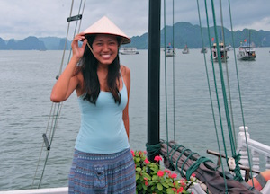

|  | Crystle WEEHonours Student (Alumna)
Email: crystle_wee(AT)u.nus.edu |
Honours Project
My research focuses on the diversity of ectosymbionts that live on three species of corals with different growth forms: the branching Pocillopora damicornis, massive Platygyra sinensis and plating coral Echinopora lamellosa. The second part of my research entails studies on the process of ecological succession on corals in Singapore's Southern waters. I hope that this research will deepen our understanding of the relationship corals have with other organisms that live on or inside them.
In a land-scarce country like Singapore where marine and coastal areas are valuable for development, it is easy to overlook the value of coral reefs and the biodiversity that they support. Information on the type of biodiversity that exists in our local waters is important in valuing marine ecosystems through methods such as Environmental Impact Assessments. In the long run, I hope that the information from my research can help to inform policymakers so as to ensure sustainable development of Singapore's marine and coastal environments.
Background
I am currently pursuing my undergraduate degree in the Bachelor of Environmental Studies (Biology) with a minor in Aquatic Ecology at the National University of Singapore. My wide interest in marine life began at a very young age when my grandmother taught me how to dig for clams at East Coast beach. This deepened much more once I tried SCUBA diving and I have been perpetually curious since.
Since joining NUS, my research projects have been marine-related. I previously did a UROPS under the Acoustic Research Laboratory in Ocean Park Hong Kong's Marine Mammal Breeding and Research Centre for a study on cognition in an Indo-Pacific bottlenose dolphin (Tursiops aduncus). I also recently collaborated on a short research project studying the seeds of spoon seagrass (Halophila ovalis) in Chek Jawa, Pulau Ubin. I am particularly passionate about marine conservation issues and education outreach to increase public understanding about marine biodiversity.